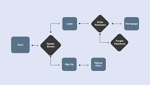

Meus Projetos

TaskFlow: Gerenciador de Tarefas
Uma aplicação web para ajudar na organização de tarefas diárias. Permite adicionar, remover e marcar tarefas como concluídas, com dados salvos localmente no navegador.

Análise de Vendas com Python
Um projeto de análise de dados que utiliza Python com as bibliotecas Pandas e Matplotlib para processar um conjunto de dados de vendas e extrair insights visuais sobre tendências de mercado.

Bot Moderador para Discord
Um bot para Discord desenvolvido em Python que automatiza tarefas de moderação, como dar as boas-vindas a novos membros, gerenciar cargos e responder a comandos personalizados.